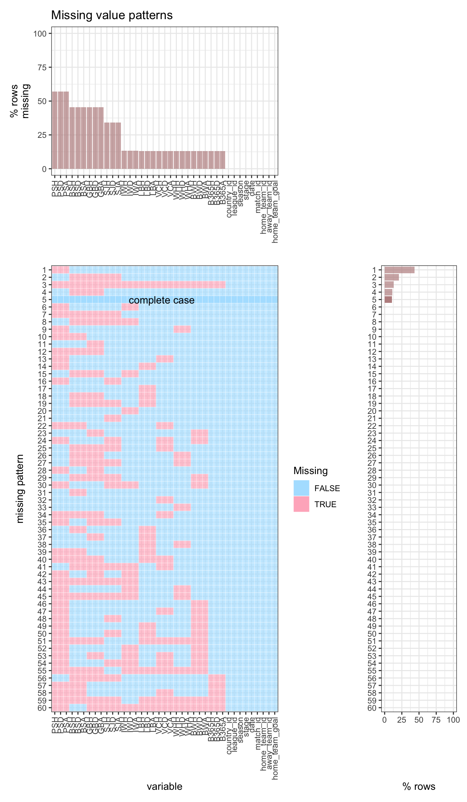

Chapter 4 Missing values
In the dataset, only team attributes, player attributes and match contain NA values.
4.1 Team attributes

We see that only “buildUpPlayDribbling” has NA values. It is easy to think that the NA pattern of this attribute has something to do with “buildUpPlayDribblingClass”. So we take a look at it.

As you can see, NA values are all in “little” class and nearly all sample with this class has an NA value in the score.
4.2 Player attributes

As we can see, nearly all samples exist with no NA value. So in the data transformation we just throw them away.
4.3 Match data
Since there are so many attributes in match data, we split it in two parts. One is about players and the other is about the bet odds. Other attributes, including the column country_id, league_id, season, stage, date, match_id, home_team_id, away_team_id, home_team_goal and away_team_goal has no missing data in it.

We firstly take a look at the players_id in the data. Since there is no intrinsic difference for players with different index, what we do here is to count the number of missing values of players in the data.
So as wee can see most data sample contains all 22 players’ id. Then in the data preprocessing session we just need to drop rows with NA values in players’ id.

We can see that there are numerous types of missing patterns about bets. Since we assume bets are irrelevant of the match result, this complex bet missing patterns are trivial to us.